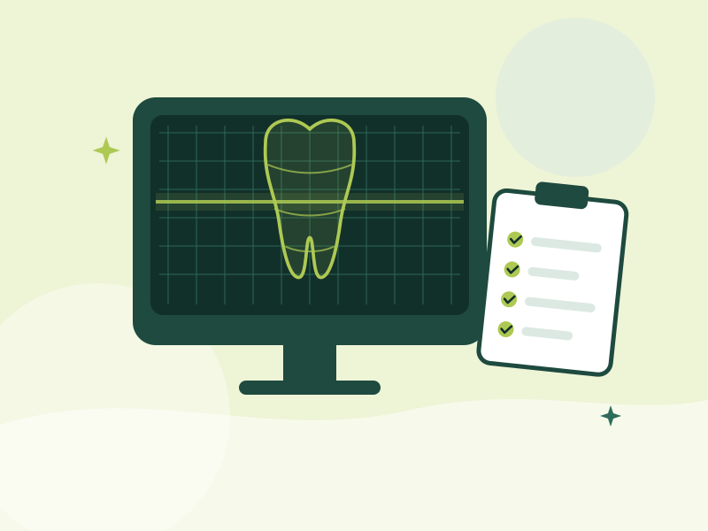
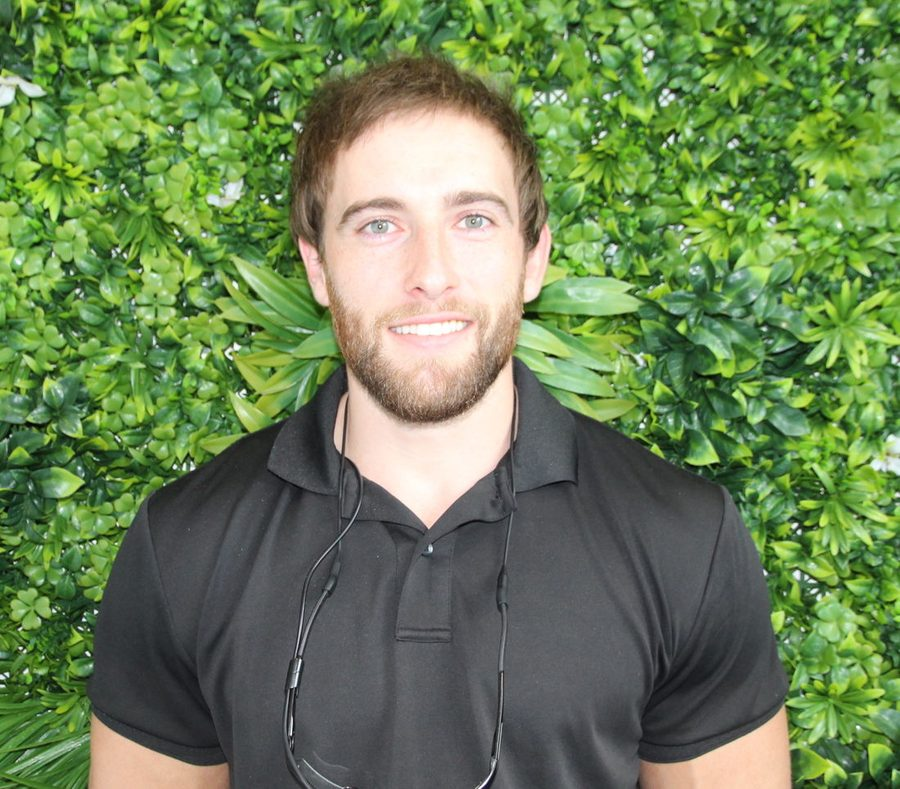
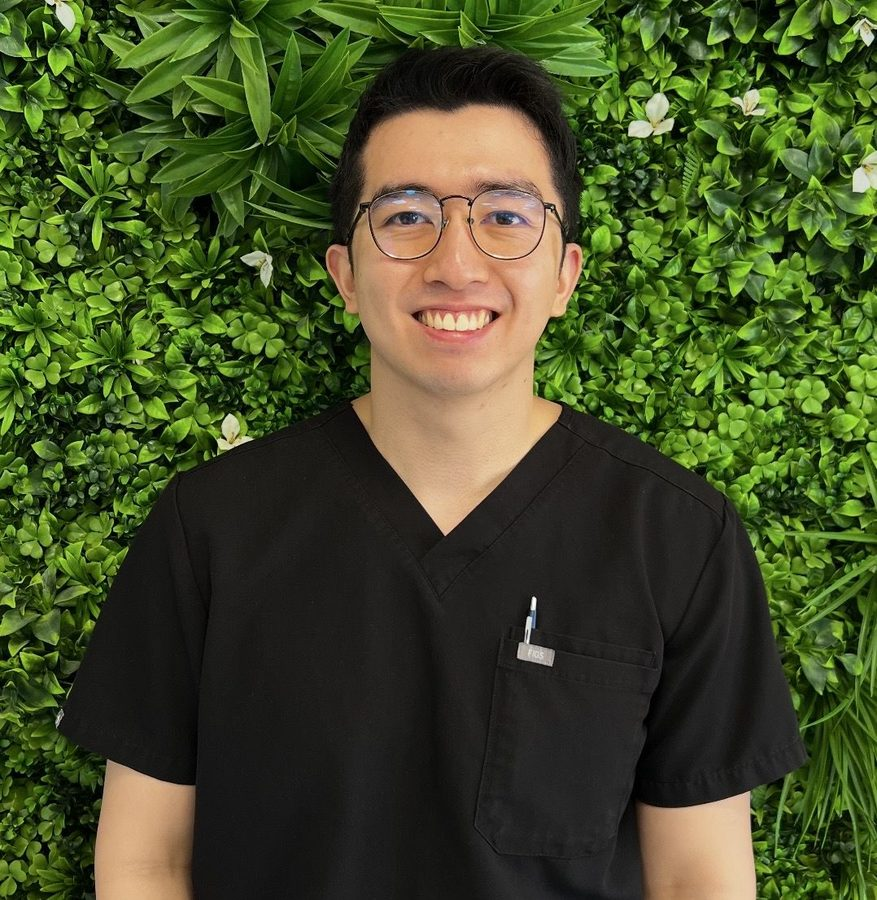

Full arch dental implants in Edmonton, Cairns
A fixed set of teeth, supported by implants
For people with a full denture that moves, or teeth that are failing. A small number of implants in the jaw support a complete set of fixed teeth that are not taken out at night.
- Consultation and 3D scan to check suitability
- A written plan with the full cost before treatment starts
Mon to Thu 8 am to 5 pm, Fri 8 am to 4:30 pm

- 3D scan firstSuitability is checked before anything goes ahead
- Full cost in writingA written plan before treatment starts
- Implant interestDr Alex and Dr Louie
- Edmonton, CairnsShop 6, 7 Stokes Street
Does this sound like you?
Full arch implants are for people who need to replace most or all of the teeth in the upper or lower jaw with one complete restoration. People usually ask about them when:
- Your denture moves
A full denture that slips when you eat or talk, or that needs adhesive every day.
- Your teeth are failing
Most of the teeth in one jaw are lost, or the remaining teeth are loose, decayed or breaking.
- You want a fixed option
You have been told you need all your teeth removed and want a fixed alternative to a conventional denture.
- You want teeth that stay in
You have an implant-retained denture and want teeth that aren’t taken out.
What full arch implants are
A full arch replaces all the teeth in the upper or lower jaw on a single fixed bridge.
The bridge is supported by four to six dental implants, small titanium posts placed in the jawbone. Once the implants have healed and bonded with the bone, the bridge is secured to them.
- Stays in
- It doesn’t come out at night and doesn’t need adhesive.
- Cared for like teeth
- It is cleaned in the mouth and reviewed by your dentist like natural teeth.

How treatment works
Usually three to six months from the first consultation to the final bridge, longer if grafting is needed. Timing differs between patients, and your dentist will give you a plan for your own treatment.
Consultation and 3D scan
Your dentist examines your mouth, takes a 3D X-ray (CBCT) and digital impressions, and talks through your health, your goals and your options. You’ll be told at this stage whether full arch implants suit you.
Planning
The implant positions and the shape of the new teeth are planned from the scan before any treatment starts. You receive a written treatment plan with the full cost and the sequence of appointments.
Implant placement
The implants are placed in the jawbone under local anaesthetic. Any remaining teeth in that arch are removed at the same appointment if they haven’t been already. Your dentist will explain how your own appointments are arranged and what to expect while you heal.
Healing
The implants bond with the bone over several months. The timeframe differs between patients and your dentist will give you yours.
Final teeth
Once healed, the final bridge is made to match your face, bite and preferences, then fitted and adjusted.
Reviews
Regular check-ups to check the implants, the gums and the bridge, and to clean areas you can’t reach at home.
Step one is a consultation and 3D scan. You’ll know whether full arch implants suit you before anything goes ahead.
Is it right for you?
Not everyone is suitable.
Your dentist will look at the amount and quality of bone in your jaw, the health of your gums, your general health and any medications, and whether you smoke. Some people need extra procedures first, such as bone grafting.
If a full arch isn’t the right option, your dentist will go through the alternatives with you, including what happens if you choose to do nothing for now.
Alternatives to ask about
- An implant-retained dentureA removable denture that clips onto two or more implants.
- A conventional dentureA removable full or partial denture.
- Individual implants and bridgesWhere enough natural teeth remain.
Things to consider
Your dentist will discuss the risks that apply to you.

- Surgery and healingIt involves surgery and a healing period of months, with some swelling and discomfort in the first days.
- Several appointmentsTreatment runs across several appointments, usually over three to six months or longer depending on healing.
- Daily care and maintenanceThe bridge and implants need daily cleaning and regular professional maintenance. Gum disease around implants can lead to implant loss.
- Possible complicationsAs with any surgery there are possible complications, including infection, nerve disturbance, implants that don’t bond with the bone, and a bridge that needs repair or replacement over time.
- Health factorsSmoking, uncontrolled diabetes and some medications affect healing and long-term success.
Cost and payment
Because the cost of a full arch depends on several factors, South Cairns Dental doesn’t quote a single figure before seeing you.
Your plan and total cost
After your consultation and scan you receive a written plan with the total cost and what each stage covers.
If you have extras cover, your health fund may contribute towards part of the treatment. Payment plans are available.
What the cost depends on
- The number of implants
- Whether teeth need to be removed
- Whether grafting is needed
- The type of bridge
Your dentist
Dr Alex and Dr Louie both have a particular interest in implant dentistry.
At your consultation, your dentist assesses whether full arch implants suit you, explains your options and talks you through who will carry out each stage of your treatment.
-

Dr Alex Bornsztejn
Principal Dentist
BHSc(Dent), MDent
-

Dr Louis Fernandez
Dentist, known as Louie
DMD
How long does the whole process take?
Usually three to six months from the first consultation to the final bridge, longer if grafting is needed. Your dentist will give you a timeframe for your own case.
Will I be without teeth?
This depends on your treatment plan. Your dentist will discuss what arrangement suits your case during healing and explain what applies to you before treatment starts.
Is it painful?
Implants are placed under local anaesthetic so you are numb during the procedure. Some swelling, bruising and discomfort is normal for a few days afterwards and is managed with the pain relief your dentist recommends.
Am I too old for implants?
Age on its own isn’t the deciding factor. Bone, gum health and general health are. Your consultation and 3D scan will show whether implants suit you.
How do I clean a full arch bridge?
Brushing, cleaning under the bridge with the tools your dentist shows you, and regular professional cleans. It’s cleaned in the mouth, not taken out.
Does my health fund cover it?
Extras cover may contribute towards some items. What you get back depends on your policy, so check with your fund using the item numbers in your treatment plan.
Book a full arch implant consultation
Call South Cairns Dental on (07) 4055 4214 or book online. Your dentist will assess whether full arch implants suit you and give you a written plan with the full cost.
- Consultation and 3D scan to check suitability
- A written plan with the full cost before treatment starts
Contact and visit
- Phone
- (07) 4055 4214
- Address
- Shop 6, 7 Stokes Street, Edmonton QLD 4869
- Hours
- Mon to Thu 8 am to 5 pm, Fri 8 am to 4:30 pm, weekends closed